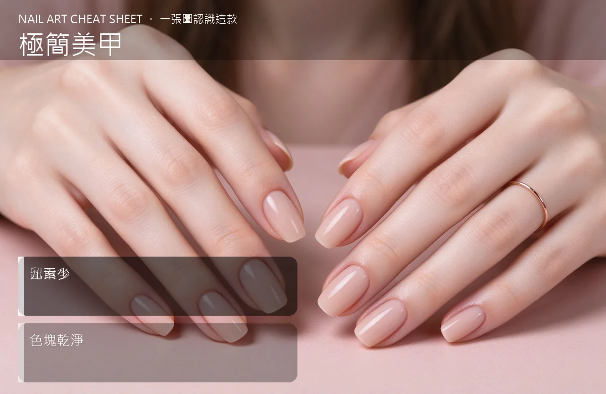

美甲極簡美甲是什麼？入門入門攻略
極簡美甲就是『留白多、元素少』，像設計師的名片，低調但懂的人會多看一眼。
極簡美甲原理與辨識重點：美甲師不說的留白多
極簡風（Minimalist）反過來做：不追求圖案多華麗，而是用大量留白、一兩條細線、或一塊乾淨的色塊來表現。常見的做法是透明或裸色底，跳一兩指畫一條斜線、一個小方塊、或一點小圓點。
誰適合做極簡美甲？文青款對號入座
文青、設計師、攝影師、喜歡簡約穿搭（黑白灰、無印、北歐風）的人；本身個性安靜、不想被手指搶走目光的人。
極簡美甲美甲施作步驟：留白＋細線
上好透明或裸色底 → 挑 1–2 指用拉線筆畫一條細直線或斜線（要一次到底）→ 或用色膠填一個小方塊在甲面一角 → 照燈 → 亮面或霧面封層都可以。
極簡美甲優缺點分析：美甲持久度與傷甲評估
| 優點 | 說明 |
|---|---|
| 耐看、不容易膩、跟任何衣服都搭、自己在家也畫得出來。 | 是日系流派的招牌，入門就能上手 |
| 缺點 | 說明 |
| 太乾淨會顯得『沒做』，朋友可能以為你只是修了指甲；對喜歡華麗的人來說會覺得無聊。 | 前置與線條畫歪、畫粗是極簡的死刑。要嘛一次畫順，要嘛用貼紙輔助，歪歪的線看起來像沒畫完。沒顧好會打折 |

極簡美甲新手雷區：元素少與常見錯誤
注意：線條畫歪、畫粗是極簡的死刑。要嘛一次畫順，要嘛用貼紙輔助，歪歪的線看起來像沒畫完。
極簡美甲和其他美甲做法的差別比較
跟『通勤美甲』很像但不完全一樣：通勤是為了上班低調，極簡是為了風格本身。極簡可以用很跳的顏色，只是元素少。
極簡美甲美甲常見問題 FAQ
Q：極簡是不是等於沒做？ A：外行人可能這麼覺得，但懂的人看的是線條、留白、比例。這就是它的樂趣——一種低調的距離感。
Q：可以跳很多顏色嗎？ A：極簡的重點是『元素少』，顏色可以玩，但一隻手不要超過兩色，否則就變繽紛款。
Q：霧面還是亮面好？ A：霧面更冷、更有設計感；亮面乾淨清爽。看個人氣質，男生做極簡通常建議霧面。